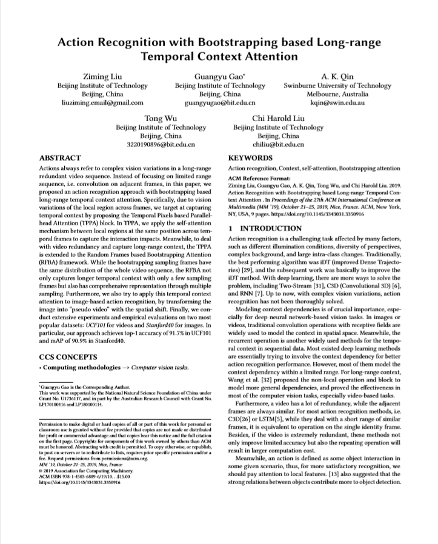

Action Bootstrapping
|
|
|
|
|

Actions always refer to complex vision variations in a long-range redundant video sequence. Instead of focusing on limited range sequence, i.e. convolution on adjacent frames, in this paper, we proposed an action recognition approach with bootstrapping based long-range temporal context attention. Specifically, due to vision variations of the local region across frames, we target at capturing temporal context by proposing the Temporal Pixels based Parallel-head Attention (TPPA) block. In TPPA, we apply the self-attention mechanism between local regions at the same position across temporal frames to capture the interaction impacts. Meanwhile, to deal with video redundancy and capture long-range context, the TPPA is extended to the Random Frames based Bootstrapping Attention (RFBA) framework. While the bootstrapping sampling frames have the same distribution of the whole video sequence, the RFBA not only captures longer temporal context with only a few sampling frames but also has comprehensive representation through multiple sampling. Furthermore, we also try to apply this temporal context attention to image-based action recognition, by transforming the image into "pseudo video" with the spatial shift. Finally, we conduct extensive experiments and empirical evaluations on two most popular datasets:UCF101 for videos andStanford40 for images. In particular, our approach achieves top-1 accuracy of $91.7%$ in UCF101 and mAP of $90.9%$ in Stanford40.

|  | Ziming Liu, Guangyu Gao, A. K. Qin, Tong Wu. Action Bootstrapping. In ACM MM 2019. [bibtex] |
This work was supported by the National Natural Science Foundation of China under Grant No.U1736117,and in part by the Australian Research Council with Grant No. LP170100416 and LP180100114.
Contact: Zi-Ming Liu